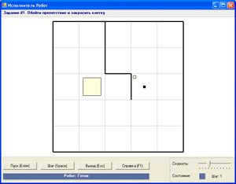

12.1. Команда ветвления
Довольно часто на поставленный вопрос человек получает ответ «да» или «нет». В зависимости от ответа он определяет свои действия и выполняет одну или другую команду (группу команд).
Роботы и другие технические устройства тоже могут выполнять различные действия в зависимости от условия. Если условие истинно (на вопрос получен ответ «Да»), то выполняются одни действия, если ложно, то другие.
Алгоритмическая конструкция ветвление обеспечивает выполнение одной или другой последовательности команд в зависимости от истинности или ложности некоторого условия.
Ветвление может изображаться на блок-схеме следующим образом:

В данной конструкции в прямоугольнике(ах) записываются команды алгоритма. При такой организации алгоритма может выполниться только одна из двух команд (последовательностей команд). Другая последовательность будет проигнорирована (пример 12.1).
Для записи конструкции ветвления в языке программирования Pascal используется команда if. Формат записи команды:
if <условие> then
begin
команды 1;
end
else
begin
команды 2;
end;
Строка if <условие> then является заголовком ветвления. Эту строку можно прочитать следующим образом: «Если условие верно, то». После слова then записывается последовательность команд 1, которая выполнится, если условие истинно. После слова else записывается последовательность команд 2, которая выполнится, если условие ложно. Слова begin и end; в данном случае играют роль операторных скобок. Обратите внимание, что перед словом else точка с запятой не ставится.
Ветвление может быть записано в полной или сокращенной форме.
Полная форма ветвления предусматривает организацию выполнения двух разных наборов команд, из которых выполняется только один. В сокращенной форме один из наборов команд (чаще по ответу «Нет») опускается. В этом случае, если условие ложное, то никакие действия не выполняются.
На блок-схеме сокращенная форма ветвления изображается следующим образом:
(Рассмотрите пример 12.2.)
На языке программирования Pascal команда запишется следующим образом:
if <условие> then
begin
команды 1;
end;
Алгоритм может содержать более одной конструкции ветвления (пример 12.3).
Пример 12.4. Решим задачу if1 из встроенного задачника.
Робот должен закрасить клетку, которая находится за стеной. В зависимости от обстановки обход стены может осуществляться по-разному.
Вначале Робот должен сдвинуться вправо. Если стена снизу, то сверху свободно и можно обойти стену сверху, в противном случае Робот обходит стену снизу.
После обхода стены Робот закрашивает клетку. Алгоритм можно записать следующим образом:
вправо;
Если сверху свободно, то
вверх; вправо; вниз;
Иначе
вниз; вправо; вверх;
закрасить.
Пример 12.5. Робот находится на неизвестной клетке поля без линий. Он должен закрасить клетку слева от себя.
Для того чтобы закрасить клетку слева от себя, Робот должен переместиться влево, а затем закрасить клетку. Однако сделать это Робот сможет только тогда, когда не находится в клетках, являющихся левой границей поля. Поэтому, прежде чем сдвинуться влево, Робот должен проверить, свободно ли слева.
Результат работы данной программы зависит от начального положения Робота. Поэтому для проверки правильности работы программы необходимо подготовить начальные обстановки, которые дают разные ответы на вопрос: слева пусто?
12.2. Составные условия
В качестве условия в алгоритмах с циклами и ветвлениями используется любое понятное исполнителю этого алгоритма высказывание, которое может быть либо истинным, либо ложным.
Все условия, с которыми нам приходилось до сих пор встречаться при составлении алгоритмов для Робота, были простыми высказываниями. Однако для исполнителя Робот можно строить и составные условия.
Составное условие — условие, которое образуется из нескольких простых условий, соединенных друг с другом логическими операциями.
С логическими операциями над высказываниями вы уже знакомы. В PascalABC используются следующие логические операции:
| Логическая операция | Запись в PascalABC |
| Не | Not |
| И | And |
| Или | Or |
(Рассмотрите пример 12.6.)
Система условий для исполнителя Робот построена таким образом, что можно обойтись без использования логической операции отрицания.
Отрицанием условия FreeFromLeft будет условие not FreeFromLeft. Однако условие «слева не свободно» означает, что там стена. Поэтому вместо условия not FreeFromLeft может быть использовано условие WallFromLeft. Отрицания для других условий показаны в таблице:
|
Условие |
Отрицание |
|
WallFromLeft |
FreeFromLeft |
|
WallFromRight |
FreeFromRight |
|
WallFromUp |
FreeFromUp |
|
WallFromDown |
FreeFromDown |
|
CellIsPainted |
CellIsFree |
|
Понятие ветвления используется в различных сферах человеческой деятельности. В ботанике под ветвлением побегов понимают процесс образования боковых побегов у растений. При употреблении термина в переносном смысле под ветвлением понимают наличие нескольких путей, направлений, сюжетных линий и т. д. Ветвления используются в дорожной разметке и картографии. |
|
Пример 12.1. Выбор обуви весной, в зависимости от погоды: Если на улице дождь, то надеть резиновые сапоги Иначе надеть туфли В данном примере в текущий момент времени может быть выполнена только одна команда из двух: или надеть сапоги, или надеть туфли. Блок-схема данного алгоритма будет выглядеть следующим
образом: Пример 12.2. Выход на улицу осенью. Если на улице дождь, то взять зонт выйти на улицу В данном примере используется сокращенная форма команды ветвления. Если условие выполнено, то выполняется команда «взять зонт». Если условие ложное, то никаких действий не происходит. Команда «выйти на улицу» выполняется всегда независимо от истинности или ложности условия. Блок-схема данного алгоритма будет выглядеть следующим образом: Пример 12.3. Имеется три монеты, среди которых одна фальшивая. Известно, что фальшивая монета легче настоящих монет. Требуется найти фальшивую монету за минимальное число взвешиваний на чашечных весах без гирь. Представим словесное описание алгоритма решения этой задачи. Положить на каждую чашу весов монеты 1 и 2 Если весы в равновесии, то фальшивая монета 3 Иначе Если монета 1 тяжелее, то фальшивая монета 2 Иначе фальшивая монета 1 Пример 12.4. Одна из возможных начальных обстановок:  Другая возможная начальная обстановка: Программа для исполнителя Робот:
Пример 12.5. Программа для исполнителя Робот:
Результаты работы программы для разных начальных обстановок:
Пример 12.6. Рассмотрим начальную обстановку поля Робота: Проверим для Робота следующие составные условия:
Первое условие состоит из двух простых: WallFromLeft (условие А ) и CellIsPainted (условие В ). Условие может быть записано как « А И В ». Это условие верно только тогда, когда верны и А , и В . Условие А — WallFromLeft — истинно, условие В — CellIsPainted — истинно, условие А И В — истинно. Второе условие может быть записано как « А ИЛИ В », где А — WallFromUp , В — WallFromDown . Условие А — истинно, условие В — ложно. Значит, условие « А ИЛИ В » — истинно. В третьем условии частица Not отрицает составное условие or WallFromRight FreeFromUp . Условие может быть записано как НЕ (« А ИЛИ В »). Для того чтобы определить, истинно или ложно это условие, нужно сначала определить истинность условия « А ИЛИ В ». Условие А — ложно, условие В тоже ложно. Поэтому ложным будет и условие « А ИЛИ В », но тогда условие НЕ « А ИЛИ В » будет истинным. |


1 Что такое алгоритмическая конструкция ветвление?
2 Что такое составное условие?
3 Какие логические операции можно использовать для записи составных условий?